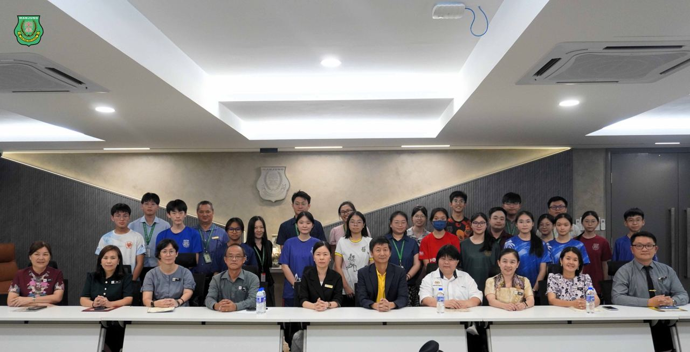
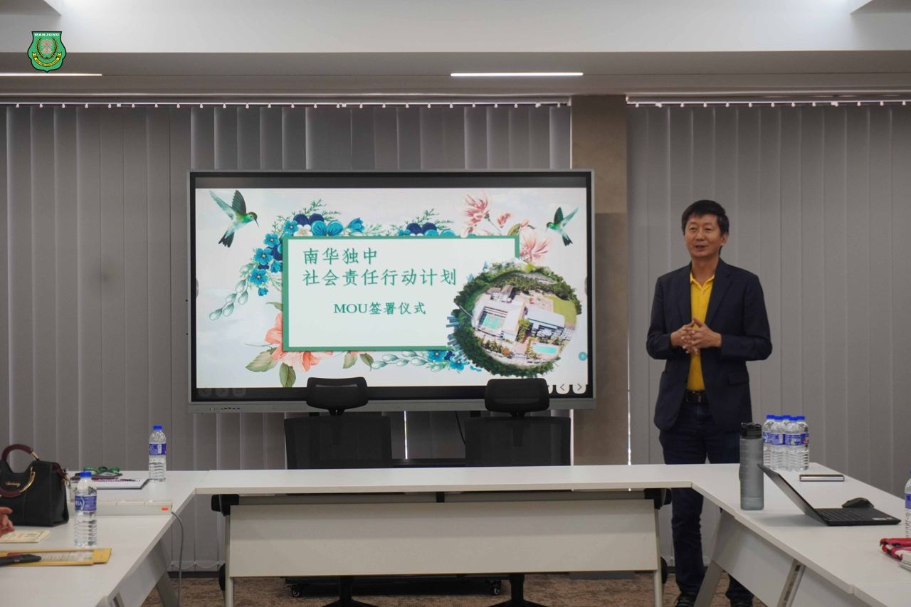
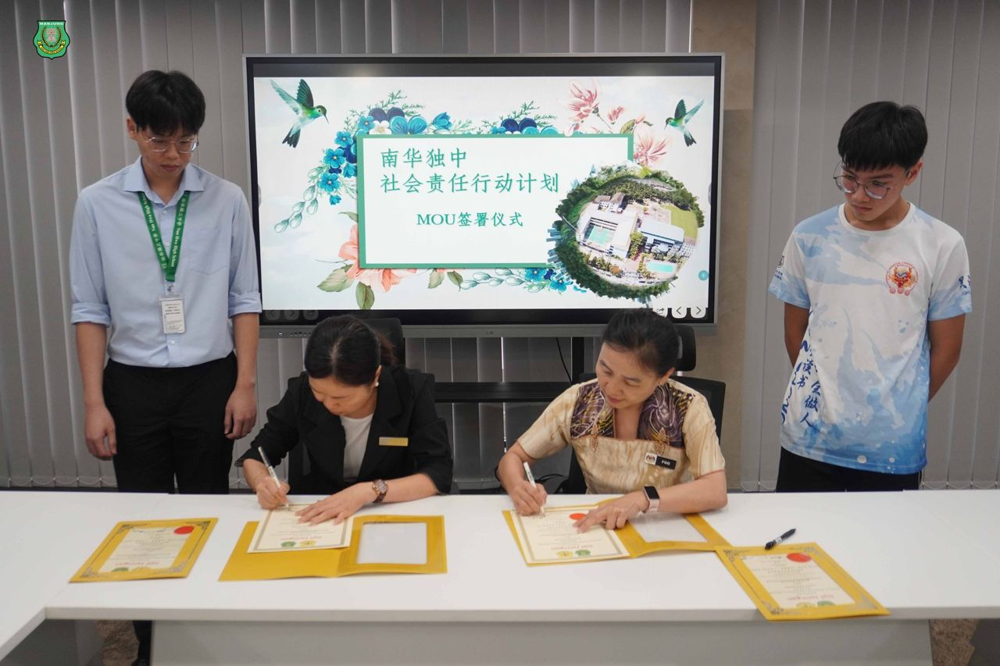
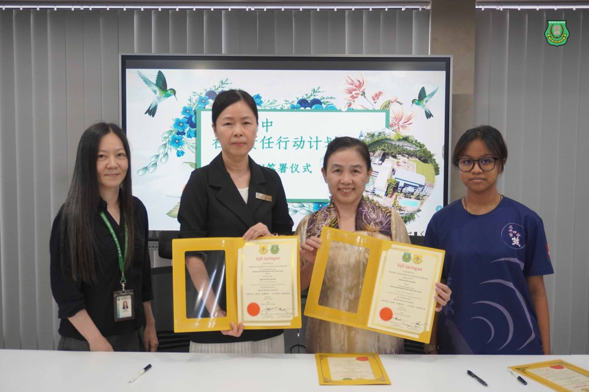
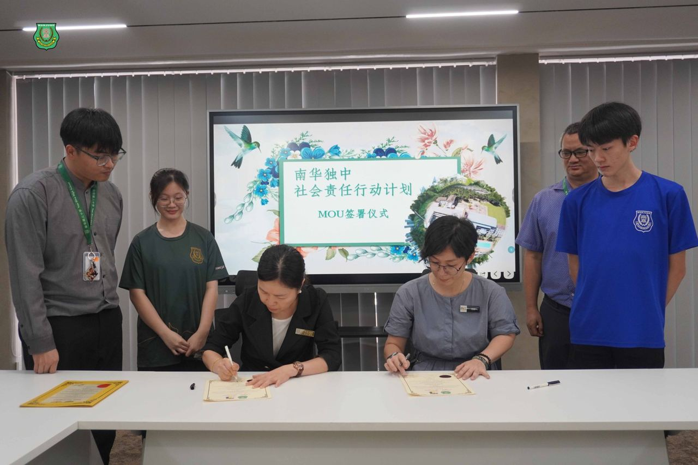
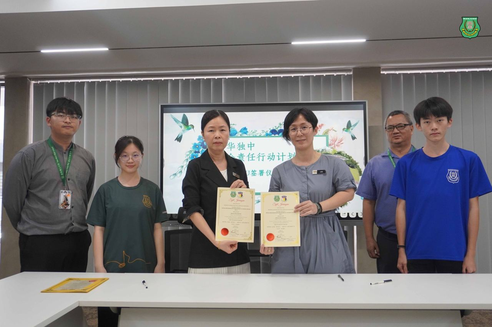
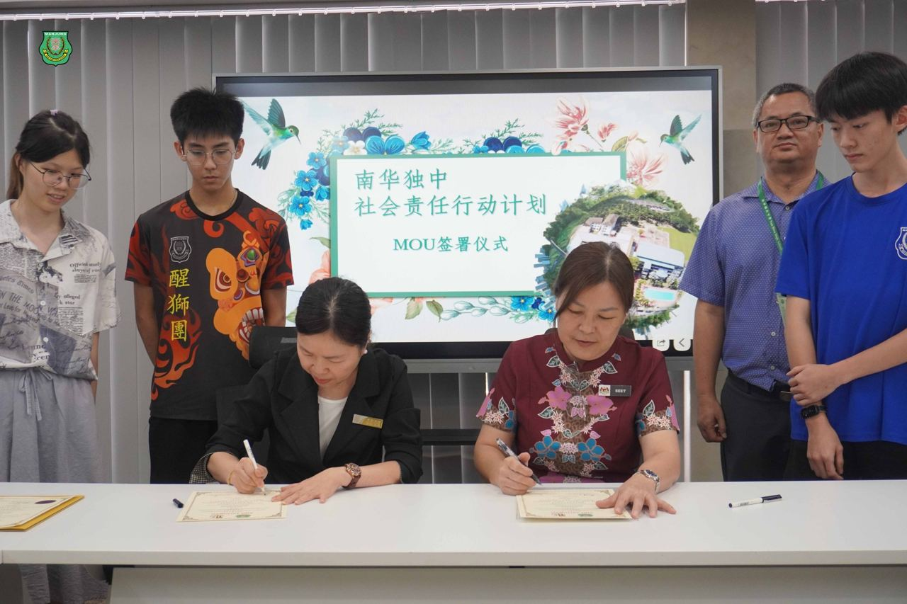
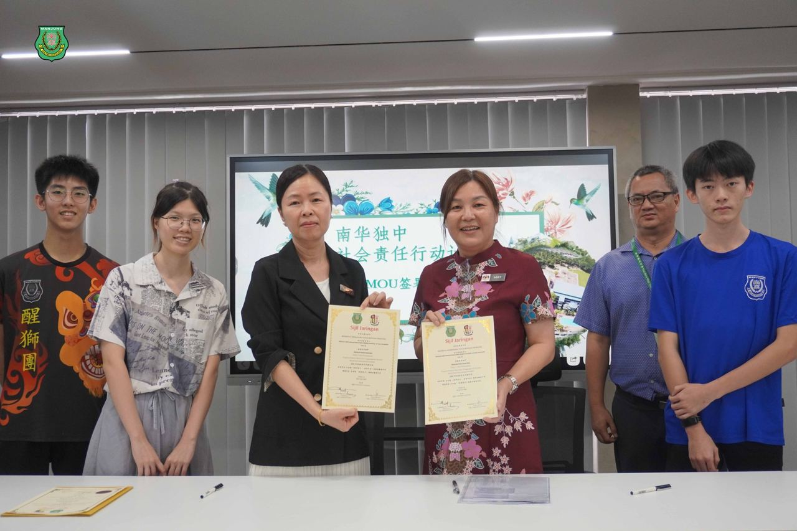

全马中学首创
全马中学首创
开展2025年社会责任行动计划
南华独中与八所华小签署合作备忘录
为推动 #教育资源共享 与 #履行社会责任实践，南华独中于日前正式与八所曼绒县华小签署“2025年社会责任行动计划合作备忘录（MOU） ”，开启跨校协作，彼此建立合作关系。
本次签署仪式是南华独中学生领袖培训计划的重要延续，汇聚了本校各学会团体中之精选团队，与曼绒地区各华小对接，依据各校需求与学会特色，携手开展具创意、实效与温度的社会责任项目。
#共筑共好 #携手创造
南华独中董事长颜登逸先生在致辞中表示：“本校非常感谢各位华小校长与代表，给予学生走出校园、走进社区，真实参与的机会、不仅倾听、更携手与助力实践学生们可贵的的社会责任行动计划。”
颜董事长也透露，校方预计将在年底举行回顾总结活动：“希望在今年年尾时，能和各合作学校一同检视计划的落实情况，观察孩子们在实际执行中的成长与挑战，以期在来年继续优化合作机制，让这项社会责任计划不止有开始，更有延续、有深化。”
#南华与八校携手 #共创教育共好
此次正式签署合作备忘录的八所学校与对接学会团体如下：
【爱大华华小】电影学会、农业与科技学会
【革成华小】扯铃学会、华乐团
【甘文阁国民华小】摄影学会、扯铃学会
【新甘光国民华小】棋社、摄影学会
【拉惹依淡培民华小】中华文化与艺术学会、农业与科技学会
【二条路建华华小】舞蹈团、射箭学会
【福清洋育英华小】舞蹈团、中华文化与艺术学会
【木威培青华小】廿四节令鼓、剧场艺术学会
#社会责任 #从倾听开始
南华独中于年初启动“社会责任行动计划”，鼓励学生以各自社团特色出发，结合真实社区需求，提出合作提案。在经过计划书撰写、展示、对接等环节后，本次正式签署合作协议，象征“计划落地”的正式起点。如今合作不仅是任务对接，更是一场跨校教育共同体的实验。每一份计划都是为了解决一个真实问题、回应一份具体需要而生，让教育走出围墙，让孩子学会用行动发光。







